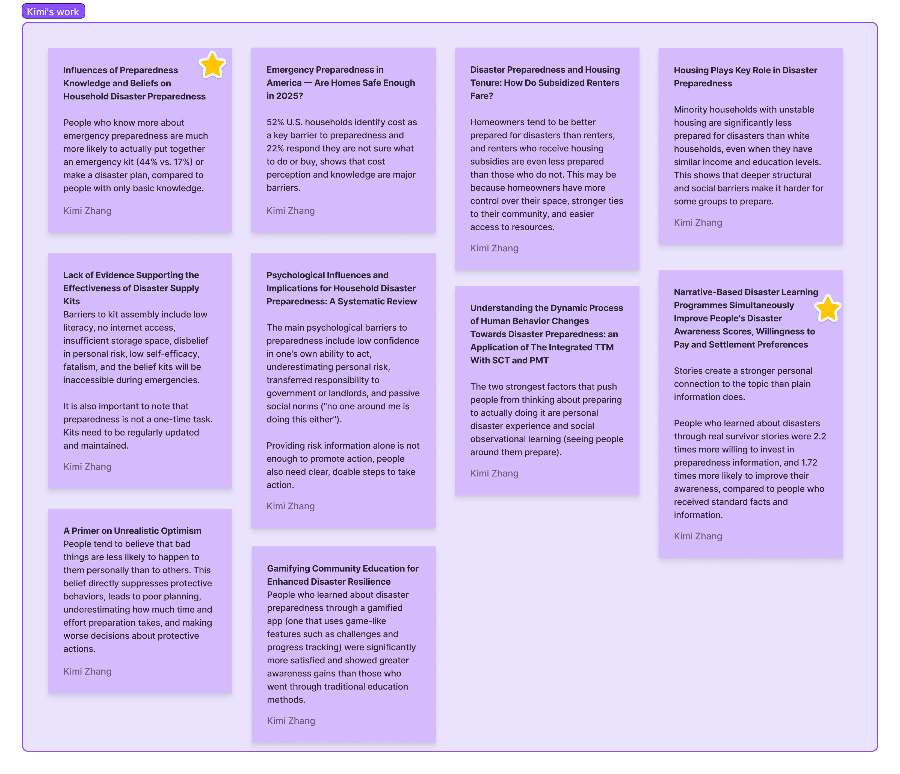
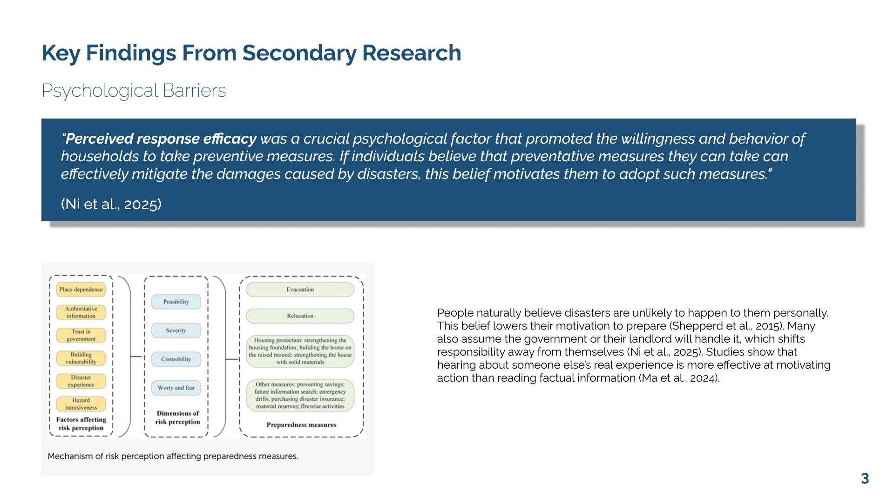
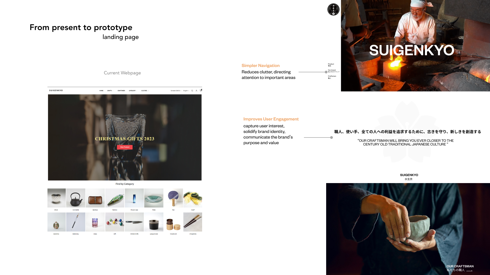
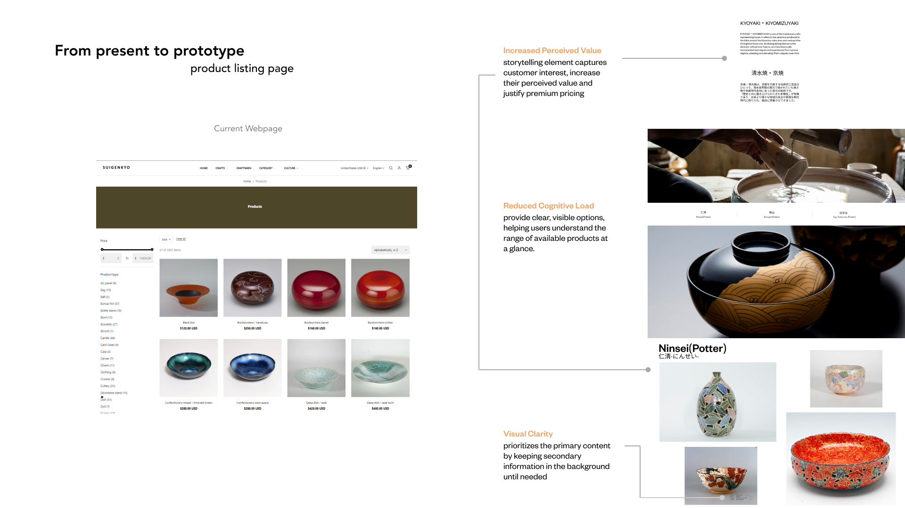
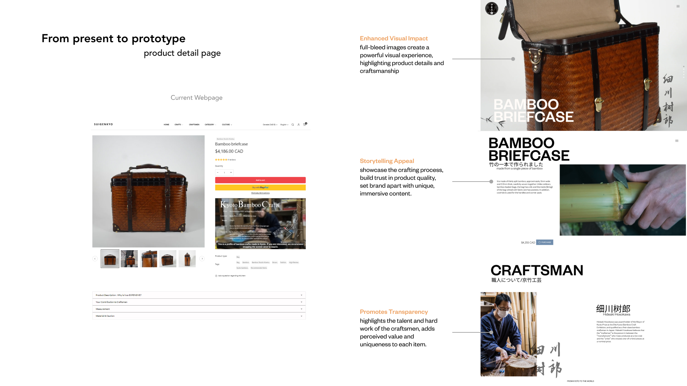
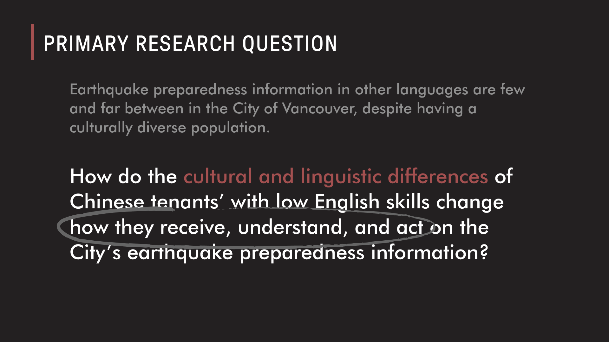
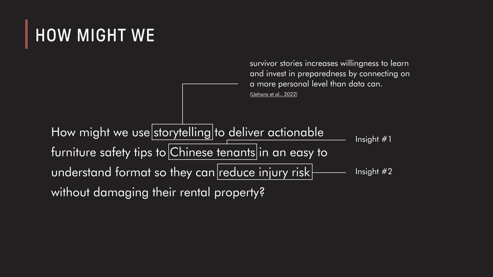
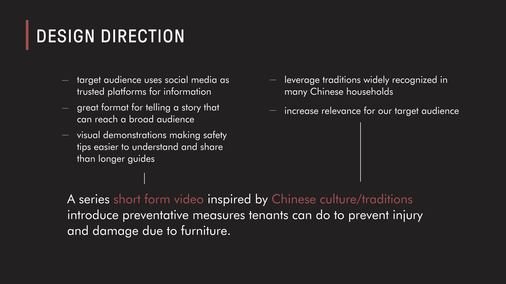
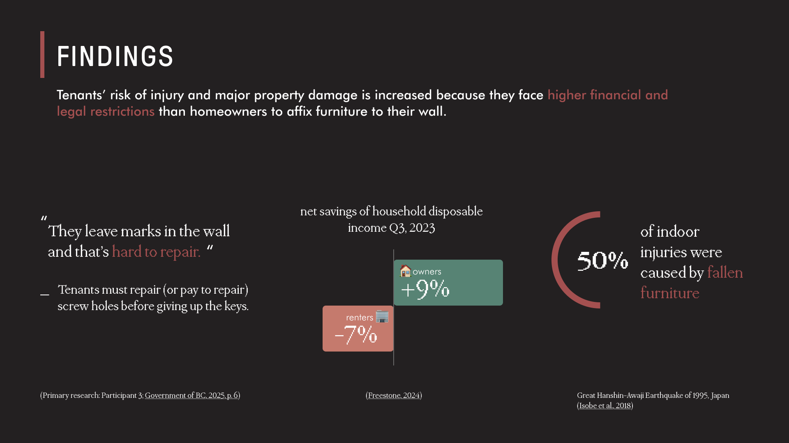
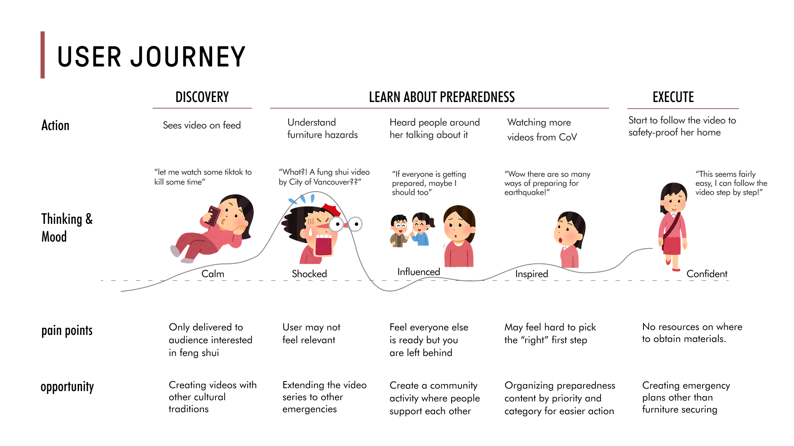

Tools Used
Figma, Secondary Research, Problem Framing
View FigJam
Timeline
3 weeks, completed March 2026
Collaborated in team of 5
Context
The project was developed for UX Design at SFU's School of Interactive Arts and Technology, a course that applies professional industry standards across interaction design, visual design, content strategy, and user interface design through client-based, research-grounded projects. Within the team, my role focused on analyzing the brief, conducting secondary research, synthesizing insights, and leading the communication design through the presentation slide deck and user journey map.
Project Overview
This project was built around a real civic brief issued by the City of Vancouver, where tenants face unique emergency preparedness challenges because they cannot modify their living space without landlord permission. The goal was to develop a means by which tenants could prepare their living space for emergencies on their own, focusing specifically on steps they could take around their home to mitigate or reduce hazards without requiring landlord approval. My first responsibility was to analyze the brief carefully and identify what the actual design challenge was beneath the surface. The problem was not simply a lack of information, it was a lack of agency, and that distinction shaped every research decision I made afterward.
Finding Meaningful Insights


I conducted secondary research to build a deeper understanding of the social and psychological context around emergency preparedness. One of the most valuable insights I uncovered was that survivor stories are significantly more effective at motivating preparedness behavior than statistics alone, because they create a personal and emotional connection that raw data simply cannot replicate. This finding shifted how I thought about the problem. It was not enough to tell people what to do — the solution needed to make people feel why it mattered.
Shaping the Design Direction





Bringing this insight to the team, we developed a design direction centered around a series of short-form videos inspired by Chinese cultural traditions, introducing preventative measures tenants could take to reduce hazards around their home without requiring any landlord permission. Narrowing our focus to a specific demographic allowed us to design with much greater intention and cultural sensitivity rather than producing something generic.
Communicating the Solution


My role then shifted toward communication design. I was responsible for designing the slide deck used to present our research findings, design rationale, and solution to our audience. I approached this the same way I approach any UX problem — by thinking carefully about who was receiving the information and what they needed to understand, and then structuring the content to guide them through it clearly and visually.
Mapping the User Experience

I also designed a user journey map to illustrate how a tenant would discover, engage with, and respond to our video series. Mapping out the emotional highs and lows throughout that journey helped me articulate not only why our solution worked, but where future iterations could address remaining pain points. It reinforced something I continue to carry into every project: understanding how a person feels at each step of an experience is just as important as understanding what they do.
Takeaways
The strongest outcome of this project was not the final deliverable but the problem framing that preceded it. Identifying that the real barrier was motivation rather than information was what gave the design direction its clarity and purpose. It taught me that the quality of a solution is largely determined before any design work begins, and that asking better questions about what a problem actually is will always produce more meaningful results than jumping straight into execution.